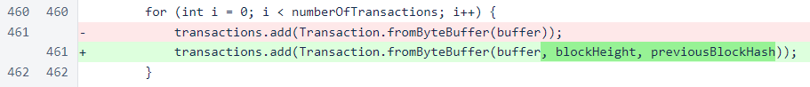
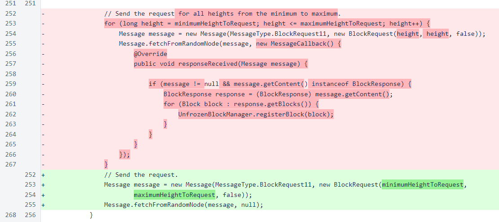
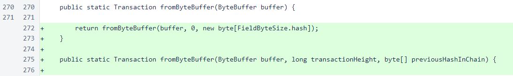
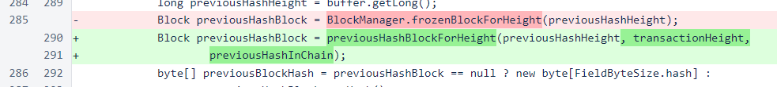
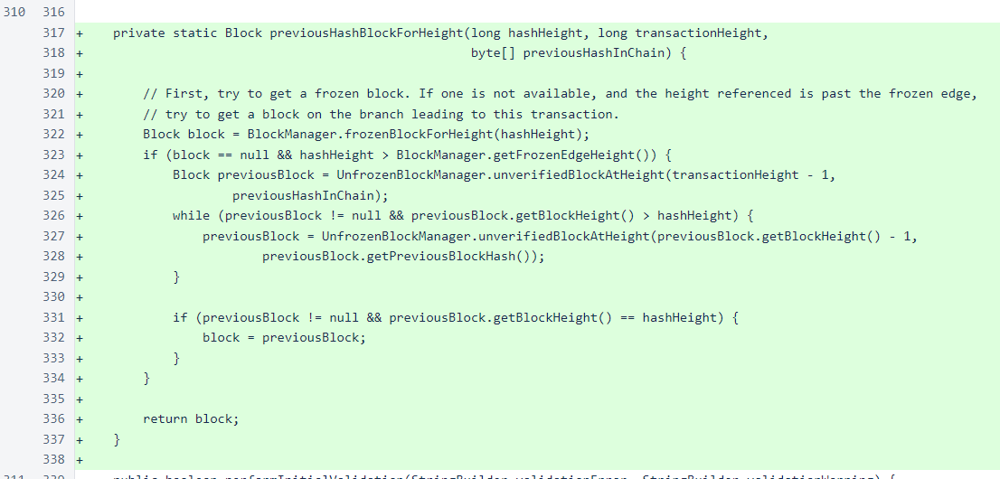
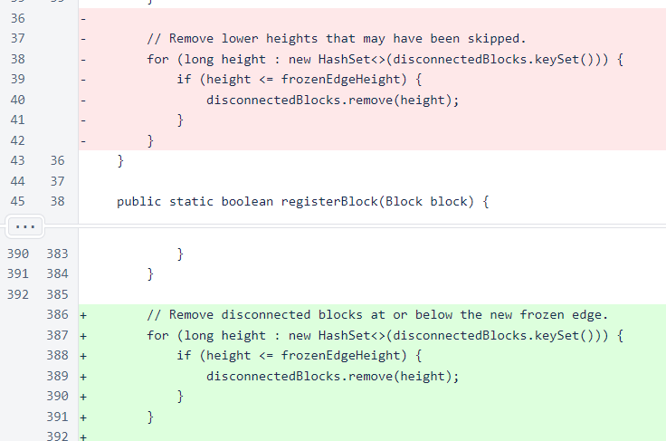
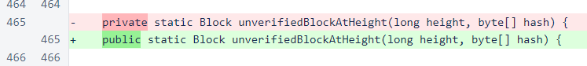
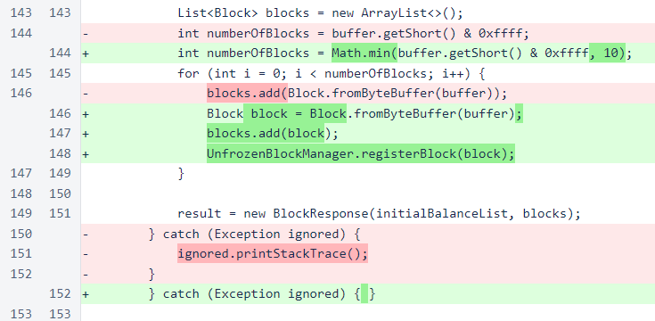
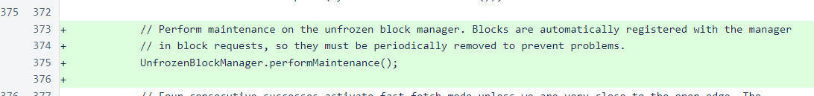

Nyzo version 518 (commit on GitHub) corrects a transaction-validation issue that could cause the chain-freezing process of version 517 to fail.
This version affects both the verifier and the sentinel. The transaction-validation issue was also affecting the sentinel in fast-fetch mode.
In the fromByteBuffer() method of the Block class, the block height and previous-block hash are now provided to the Transaction.fromByteBuffer() method. This information is used to find the previous-block hash of the transaction if the block referenced has not yet been frozen.
In BlockVoteManager.requestMissingFrozenBlocks(), the separate requests for missing blocks have been replaced by a single request. The separate requests were used due to the observation that multiple-block requests frequently failed when the sentinel was in fast-fetch mode. This was a case where we did not follow our rule of fully understanding an existing problem before releasing new code, and we regret not digging deeper before releasing version 517. The root cause of the sentinel fast-fetch problem was also found to interfere with the chain-freezing technique introduced in version 517.
Also, the callback has been eliminated. Its only purpose was to register blocks with the unfrozen-block manager, and that is now done automatically when the response is received.
The Transaction.fromByteBuffer() method now has an override that accepts the height of the transaction and the hash of the previous block in the chain. When the method is called with its old signature, a height of zero and an empty hash cause the method to behave exactly as it did before.
Previously, lookup of the block referenced for a previous-block hash would only look to blocks already frozen on this verifier. Now, to support receipt of blocks that contain transactions referencing other blocks not yet frozen on this verifier, a more thorough lookup is performed.
The new lookup method first looks to frozen blocks. However, if the transaction references a block that is not yet frozen on this verifier, the lookup will now step back through unfrozen blocks to attempt to find the referenced block.
In UnfrozenBlockManager, cleanup of the disconnected-blocks map has been moved from attemptToRegisterDisconnectedBlocks() to the more appropriate location of performMaintenance(). This was done because the sentinel now needs to perform this cleanup, and the sentinel currently has no need to register disconnected blocks.
Visibility of the unverifiedBlockAtHeight() method has been widened to allow the Transaction class to access it.
In BlockResponse, blocks are now immediately registered with the unfrozen-block manager as they are created. This is necessary because, with multiple-block responses, a transaction in one of the later blocks of the response may reference a block earlier in the request. Also, the number of blocks is now limited to 10 by the recipient of these responses, as this response should not contain more than 10 blocks. In the future, a number of other protections will be put in place to protect the unfrozen-block pool from memory-related attacks.
The sentinel now performs cleanup on the unfrozen-block manager whenever blocks are frozen. While the sentinel does not explicitly register blocks with the unfrozen-block manager, the block responses now register all blocks automatically. From a design standpoint, we find this mechanism troubling — simply reading a response is now causing the state of a class to change, and that state change requires additional maintenance work to ensure the program continues to run smoothly. This is the kind of solution that, left unchecked and repeated for other problems, eventually leads to a codebase that is exceptionally difficult to understand and debug. While the change is necessary and appropriate at this point in time, we hope to find a more elegant solution in the future.
